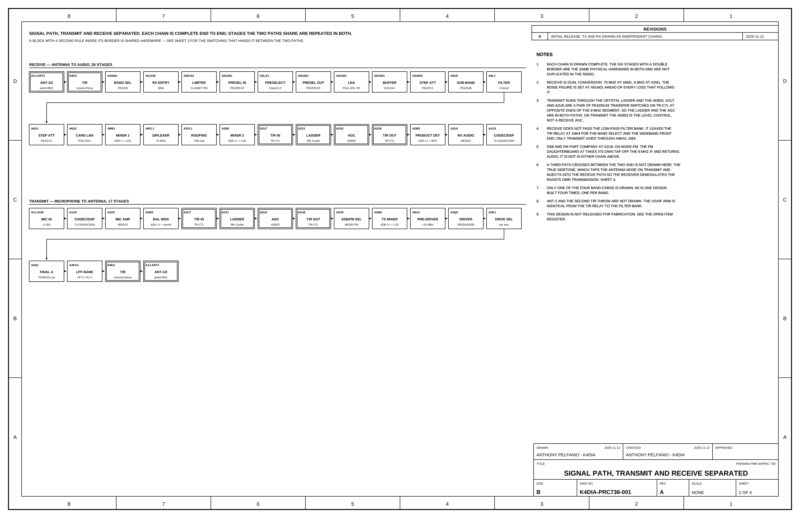
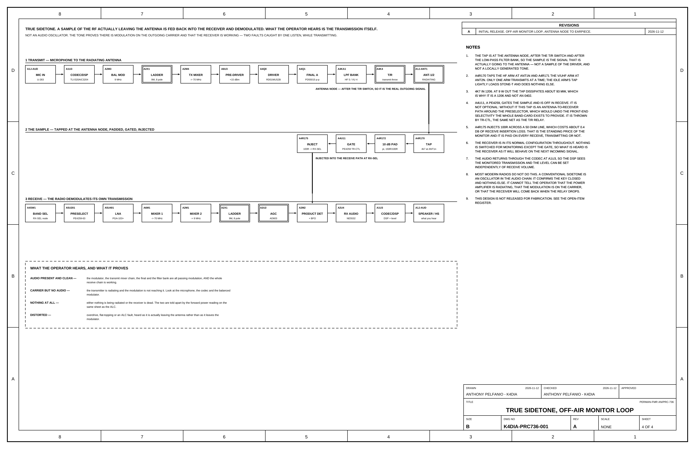

Projects PERMAN-FMR AN/PRC-736 Discuss on GitHub
In design New: the block diagram, 4 sheets
PERMAN-FMR
AN/PRC-736
A radio of my own, drawn from scratch and deliberately superheterodyne rather than software defined. Ten years of sketching, calculating and revising, built on what I learned keeping a URC-94 and a GRC-171 running, and on what carrying a PRC-150 taught me about how a radio should sit in the hand.
![Earlier design render, made when the radio was still called the MB-470. A black rack-eared transceiver seen from the front: an N-type antenna jack marked 50 ohm on the left with a GPS jack beside it, a backlit display reading MB-470, CH 001, 14.250.00 USB, TX 20W, a sixteen-key pad in the centre, CLR and SQL controls either side of it, PWR and CHAN knobs on the right, and circular AUX and MIC connectors at the lower corners. Below, three smaller views: front left perspective, right side, and rear showing the power connector marked 10 to 32 VDC and a finned heatsink.](mb470-sheet.webp)
- Architecture
- Superheterodyne, by choice
- Coverage
- 1.5 to 470 MHz
- Modes
- SSB, AM and FM
- Receiver
- Dual conversion, 70 MHz then 9 MHz
- Transmit
- 20 W PEP
- Stage
- In design since 2015, not released for fabrication
The URC-94: the HF radio I learned on
I have years of experience operating, maintaining, and repairing the URC-94 radio set, and when it comes to HF radios, the URC-94 is still the love of my life. It is an absolute tank and a drama queen at the same time. When she breaks, she tends to break hard. But when she is properly maintained and cared for, she will run seemingly forever.
Her antenna coupler can be every bit as temperamental, particularly when dealing with spark-gap issues and capacitor failures. In my experience, many of those problems were not inherent design flaws, but the result of poor environmental sealing, pressurization, or maintenance practices. When the system is properly maintained, it is remarkably capable.
Five days of continuous transmit on a GRC-171
The URC-94's cousin, the GRC-171(V)2, is equally impressive. I once operated one at essentially a 100 percent duty cycle for five straight days, transmitting continuously at 20 watts. It never stopped. No faults, no blown components, no significant failures. Experiences like that gave me a tremendous appreciation for how these radios were engineered and how much margin was designed into them.
Over the years, I took the intimate knowledge I gained from operating, troubleshooting, and repairing these two radios and began applying it to a radio design of my own, intended to cover HF through UHF. I deliberately chose a traditional superheterodyne architecture rather than an SDR approach.
What carrying a PRC-150 taught me
I have also spent plenty of time carrying and operating the PRC-150 and PRC-117 series radios, and I developed a different kind of appreciation for them. They are durable bricks that can take a beating, but their mobility, packaging, ergonomics, and overall physical design are what really influenced me. Much of the inspiration for the form and field usability of my own radio comes from those systems.
Since around 2015, I have been brainstorming, sketching, calculating, revising, and slowly working my way toward a complete radio design.
Why a superheterodyne and not an SDR
There is something about the architecture of a well-designed superheterodyne radio that I genuinely love. I appreciate being able to understand the signal path circuit by circuit and stage by stage. I appreciate design details such as deriving a true sidetone sample from the transmit audio at the T/R switching point and feeding that actual sample back to the operator's headset. Those details may seem small, but they demonstrate how thoughtfully some of these systems were engineered around both the signal and the person operating the radio.
That is not meant as criticism of modern radio design. Modern SDR architecture is remarkable in its own right, and software-defined systems achieve an entirely different kind of simplicity, flexibility, and capability. My preference for superheterodyne architecture is simply rooted in what I enjoy about radio engineering: understanding and designing the physical signal chain and knowing exactly what is happening to the signal as it moves through each stage.
Where the design stands after ten years
After more than a decade of thinking about this radio, drawing it, doing the math, changing things, and applying lessons learned from the equipment I have worked on, pencil, paper, calculations and schematics are no longer enough.
If I want to find out whether the radio I have been designing since 2015 actually works the way I believe it will, I have to start putting real money into hardware and bring it to life.
The whole radio on one sheet
Drawing K4DIA-PRC736-001
Rev A, sheet 1 of 4
The radio has a new name and its first drawing set. PERMAN-FMR stands for Personal Manpack, Field Maintenance Repairable. The AN/PRC-736 number is my own, in the style of the sets this design borrows from. It is not a government designation.
Sheet 1 is the detailed block diagram: the whole transceiver in six signal bands, read left to right. Every block carries its assembly and reference designator, so a block on this sheet is a part you can put a finger on. The ten assemblies are listed with their part counts at the bottom of the sheet.
![Sheet 1, detailed block diagram of the PERMAN-FMR AN/PRC-736. Six rows of labelled blocks run left to right: receive from the antenna to the first mixer, the 70 MHz and 9 MHz IF with detectors and audio, transmit from the microphone to the antenna with the true sidetone loop beneath it, the local oscillator and reference chain, control with the FM daughterboard and keying, and power, all linear from 13.8 V. Numbered notes are on the right, an assembly schedule with part counts along the bottom, and the title block in the lower right corner.](prc736-sheet-1.webp)
| Band | What is in it |
|---|---|
| Receive, antenna to first mixer | T/R relay, band select, PIN limiter, three-band LC preselector, PGA-103+ low-noise amplifier, buffer, 31.75 dB step attenuator, sub-band filter |
| Receive, IF and audio | Band-card attenuator and amplifier, first mixer to 70 MHz, diplexer, 70 MHz crystal roofing filter, second mixer to 9 MHz, eight-pole crystal ladder, AD603 AGC, product detector, audio |
| Transmit | Microphone input, codec and DSP, mic amplifier, balanced modulator at 9 MHz, SSB/FM select, transmit mixer, pre-driver, driver, two push-pull finals, low-pass filter bank |
| Local oscillator and reference | 38.4 MHz VCTCXO, internal or external reference, ADF4351 for LO1, one Si5351C for LO2 and the BFO, a buffer on each output |
| Control, FM and keying | STM32H743 controller, preset memory, key in and key out, 24-way backplane, FM demodulator and squelch on their own daughterboard |
| Power | All linear from 13.8 V. The oscillator rail is regulated twice so the synthesiser sees two stages of rejection |
Not released for fabrication. Every sheet says so, and sheet 1 says why: 312 of 2,396 net-bearing pins have no pad on their board yet, four pin assignments disagree between boards, and the preselector switch is specified as a part with too few throws. The blocks are checked against the parts model each time the sheet is built. The connections between them are my reading of the design, not something derived from the netlist.
Receive and transmit, end to end
26 stages in
17 stages out
Sheet 2 pulls the two paths apart. Receive runs 26 stages from the antenna to the audio codec. Transmit runs 17 from the microphone to the antenna. The six blocks with a double border are the same physical hardware in both chains, drawn twice so each chain reads complete. Receive never passes through the low-pass filter bank. It leaves the T/R relay for the band select and the wideband front end, and only transmit goes through the filters.

What the two paths share
One control net
throws every switch
The eight-pole 9 MHz crystal ladder and the AD603 sit between two transfer switches, so both paths use them. One net, TR-CTL, throws both switches and the antenna relay together. There is no state in which one end is transmitting and the other receiving. On receive the AD603 is the AGC. On transmit the same part sets the level. LO2 and the 9 MHz carrier both come from one Si5351C, so one failed part takes out both paths at once. That is the cost of the saving.
![Sheet 3, common hardware. In the centre a dashed box marks the shared 9 MHz segment: transfer switch, eight-pole crystal ladder, AD603 and a second transfer switch, with one control net joining the two switches. Receive enters from the second mixer and leaves to the product detector above the centre line; transmit enters from the balanced modulator and leaves to the SSB/FM select below it. Above, the reference oscillator feeds a fanout to LO1 and to the shared LO2 and BFO source. Below, the antenna connector and the T/R relay.](prc736-sheet-3.webp)
True sidetone, taken off the air
Not an audio oscillator
An off-air monitor
Most modern radios do not do this. A conventional sidetone is an oscillator in the audio chain. It confirms the key closed and nothing else. This one taps the RF at the antenna node, after the T/R relay and after the low-pass filters, pads it down, gates it into the receive path, and lets the radio demodulate its own transmission. Nothing else in the receiver is switched for it, so what you hear is the receiver as it will behave on the next incoming signal.

| In the headset | What it tells you |
|---|---|
| Audio, present and clean | The modulator, the transmit mixer chain, the final and the filter bank are all passing modulation, and the whole receive chain is working. |
| Carrier but no audio | The transmitter is radiating and the modulation is not reaching it. Look at the microphone, the codec and the balanced modulator. |
| Nothing at all | Either nothing is being radiated or the receiver is dead. The forward power reading tells the two apart. |
| Distorted | Overdrive, flat-topping or an ALC fault, heard as it actually leaves the antenna and not as it leaves the modulator. |
It is not free. The injection resistor costs about 0.4 dB of receive insertion loss, and that is paid on every receive, transmitting or not. The gate is not optional either. Without it the tap would be a path from the antenna to the receiver around the preselector.
What goes up next
- The receive cascade sheet: gain, noise figure and signal level, stage by stage.
- The open-item register, and each item on it as it gets closed.
- Front panel and chassis drawings, including the hole schedule and the machined faceplate.
- The band plan and the filter scheme on the four band-cards.
- A parts and cost breakdown as hardware starts getting bought.
The design has been in progress since 2015 and this page follows it as it moves off paper. The radio was called the MB-470 until November 2026.
Discuss this project on GitHub
Built one, measured something different, or found a mistake? The conversation for every page on this site lives in GitHub Discussions, where it stays with the files. A GitHub account is all it takes. Sign with your callsign.